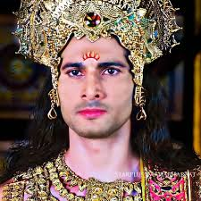

Home
Pandavas
Kauravas
Supporting_roles
Female_roles
Mahabaratham serial cast
Saurabh Raj Jain
Krishna(267 episodes,2013-2014)
Krishna was the key political figure in overthrowing Kamsa, the king of
Surasena Kingdom. The kingdom of Shurasena was the native kingdom of
Yadava clans constituted by the Andhakas, Vrishnis, and Bhojas. By
overthrowing Kamsa, Krishna re-established the old king Ugrasena on the
throne and stabilized the kingdom from collapse due to factional
fighting within the kingdom. The next threat came from outside the
country, from the Magadha Kingdom. The ruler of Magadha, Jarasandha,
attacked Surasena many times and weakened its military. Krishna and
other Yadava chiefs all tried their best to hold on. At last, they had
to flee from their native kingdom to the south and to the west. Later,
with the initiative of Krishna, the Yadavas who fled from Surasena
formed a new kingdom called Dvaraka. Its capital was Dvaravati, a city
well protected by mountains on all sides, on an island, not far from the
Gujarat coast. This made it immune to attacks from land. The kingdom
prospered by sea trade with seafaring kingdoms.
Arav Chowdharry
Bhishma(267 episodes,2013-2014)

Bhishma (Sanskrit: भीष्म, romanized: bhīṣma, lit. 'mighty'),[1] also
known as Pitamaha, Gangaputra, and Devavrata, was a prince, statesman
and commander of ancient Indian Kuru kingdom and is a major character of
the epic Mahabharata and the protagonist of the Bhishma Parva episode.
He was the supreme commander of the Kaurava forces during the
Kurukshetra War. He was the only character who witnessed the entirety of
the events of the Mahabharata, beginning from the reign of his father,
King Shantanu of the Kuru kingdom. Bhishma was the stepbrother of Vyasa,
the grandfather of both the Pandavas and the Kauravas. He was a
prominent statesman of the Kuru Kingdom. He was born as the youngest son
of King Shantanu and goddess Ganga. Originally named Devavrata, he was
made the heir-apparent of his kingdom. However, he renounced his
birthright for his father's happiness and took a vow of lifelong
celibacy. Owing to this selfless decision, he came to be known as
Bhishma, and was blessed to live as long as he wanted, by his father,
Shantanu. He participated in the Kurukshetra War on the side of the
Kauravas. On the tenth day of the war, the Pandava prince Arjuna, with
the help of Shikhandi, pierced Bhishma with numerous arrows and
paralysed him upon a bed of arrows. After spending fifty-one nights on
the arrow bed, the hero Bhishma left his body on the auspicious
Uttarayana (winter solstice). Before his death, he passed down the
Vishnu Sahasranama to Yudhishthira.
Arun Rana
Pandu(125 episodes,2013-2014)

As a consequence of Kindama's curse, Pandu became incapable of fathering
any children. One day, Pandu was regaling the story of his birth and his
wish of becoming a father to his first wife, Kunti. Kunti told him about
the child-bearing mantra taught to her by the sage Durvasa. Pandu was
overjoyed and told Kunti to use it to gain sons from suitable
deities.[14] He wanted his son to be righteous, and so he suggested
Dharmaraja, the deity of death and righteousness. Kunti chanted her
mantra and the deity granted her Yudhishthira. Later, Pandu expressed
his desire for a powerful son. This time, Kunti invoked Vayu and Bhima
was born. Pandu suggested Kunti to invoke Indra and a valiant son,
Arjuna, was born. Pandu felt bad for Madri's childlessness, and thus
requested Kunti to share her mantra with her. Heeding his request, Kunti
revealed her mantra once to Pandu's younger wife. Madri invoked the
Ashvin twins, and then gave birth to Nakula and Sahadeva.[15]
Nissar Khan
Dronacharya(267 episodes,2013-2014)

n the epic, he serves as the royal preceptor of the Kauravas and the
Pandavas. He is one of the primary counsellors and warriors featured in
the epic. He is a friend of Sukracharya, the guru of the asuras, as well
as Mahabali. He is described to be the son of the sage Bharadvaja, and a
descendant of the sage Angirasa. The preceptor is a master of advanced
military arts, including the divine weapons known as astras. He serves
as the second commander-in-chief of the Kaurava army, from the 11th day
to the 15th day. The acharya fails four times in capturing Yudhishthira
(The 11th day, 12th day, 14th day, and the 14th night). He was beheaded
by Dhrishtadyumna when he meditates to release his soul on the
battlefield.[1] It is said that Drona is an incarnation of Shukracharya.
He is guru to the Pandavas, Kauravas, Jayadratha, and Ashwatthama, his
son.
Aham Sharma
Karna(267 episodes,2013-2014)

Karna (Sanskrit: कर्ण, IAST: Karṇa), also known as Vasusena, Anga-Raja,
Sutaputra and Radheya,[2] is one of the major characters in the Hindu
epic Mahābhārata.[3][4] He is the son of Surya (the Sun deity) and
princess Kunti (later the Pandava queen). Kunti was granted the boon to
bear a child with desired divine qualities from the gods and without
much knowledge, Kunti invoked the sun god to confirm it if it was true
indeed. Karna was secretly born to an unmarried Kunti in her teenage
years, and fearing outrage and backlash from society over her premarital
pregnancy, Kunti had to abandon the newly born Karna adrift in a basket
on the Ganges.[3][5] The basket is discovered floating on the Ganges
River. He is adopted and raised by foster Suta parents named Radha and
Adhiratha Nandana[2] of the charioteer and poet profession working for
king Dhritarashtra.[3] Karna grows up to be an accomplished warrior of
extraordinary abilities, a gifted speaker and becomes a loyal friend of
Duryodhana.[3][6] He is appointed the king of Anga (Bihar-Bengal)[7] by
Duryodhana.[2] Karna joins the losing Duryodhana side of the Mahabharata
war. He is a key antagonist who aims to kill Arjuna but dies in a battle
with him during the Kurushetra war.[3][4
Rohit Bharadwaj
Yudhisthira(267 episodes,2013-2014)
Yudhishthira (Sanskrit: युधिष्ठिर, IAST: Yudhiṣṭhira) also known as
Dharmaraja, was the king of Indraprastha and later the King of Kuru
Kingdom in the epic Mahabharata. He is the eldest among the five
Pandavas, and is also one of the central characters of the epic.[2]
Yudhishthira was the son of Kunti, the first wife of King Pandu,
fathered by the god Yama due to Pandu's inability to have children.
Yudhishthira held a belief in dharma (morals and virtues) and was chosen
to be the crown prince of Kuru. But after the Lakshagriha incident, he
was presumed to be dead and his cousin Duryodhana was appointed as the
new heir. The kingdom was split in half due to a succession dispute
between Yudhishthira and Duryodhana. Yudhishthira received the barren
half, which he later transformed into the magnificent city of
Indraprastha.[3] Yudhishthira and his brothers had a polyandrous
marriage with Draupadi, the princess of Panchala, who became the empress
of the Indraprastha. After Yudhishthira performed the Rajasuya Yagna, he
was invited to play a game of dice by his jealous cousin, Duryodhana and
his uncle, Shakuni. Shakuni, a master at the game, represented
Duryodhana against Yudhishthira and manipulated him into gambling his
kingdom, wealth, the freedom of his brothers, Draupadi, and even
himself. After the game, the Pandavas and Draupadi were sent into exile
for thirteen years, with the last year requiring them to go incognito.
During his exile, Yudhisthira was tested by his divine father Yama. For
the last year of the exile, Yudhishthira disguised himself as Kanka and
served the King of Matsya Kingdom.[4]
Saurav Gurjar
Bhima(267 episodes,2013-2014)
Bhima (Sanskrit: भीम, IAST: Bhīma), also known as Bhimasena (Sanskrit:
भीमसेन, IAST: Bhīmasena), is a divine hero and one of the most prominent
figures in the Indian epic Mahabharata, renowned for his incredible
strength, fierce loyalty, and key role in the epic’s narrative. As the
second of the five Pandava brothers, Bhima was born to Kunti—the wife of
King Pandu—through the blessings of Vayu, the wind god, which bestowed
upon him superhuman strength from birth. His rivalry with the Kauravas,
especially Duryodhana, defined much of his life, with this tension
ultimately erupting in the Kurukshetra War, where Bhima killed all
hundred Kaurava brothers.[1] Bhima’s life was filled with extraordinary
episodes that showcased his unmatched strength and bravery. From
childhood, where he was rescued by the Nagas (divine serpents) after
being poisoned, to his victories over formidable foes like Bakasura,
Hidimba, and Jarasandha, Bhima’s adventures are integral to the
Mahabharata’s storyline. His raw, earthy nature is reflected in the
brutal slaying of his enemies, his immense appetite and his marriage
with Hidimbi, a rakshasi (a supernatural being known to consume humans),
who bore him a son, Ghatotkacha, a powerful warrior who would later play
a significant role in the Kurukshetra War.[1]
Shaheer Sheikh
Arjuna(267 episodes,2013-2014)

Arjuna (Sanskrit: अर्जुन, IAST: Arjuna) was an ancient prince of the
Kuru Kingdom, located in the present-day India. He is one of the main
protagonists of the Hindu epic Mahābhārata. He was the third of five
Pandava brothers, from the lineage of the Kuru. In the Mahabharata War,
Arjuna was a key warrior from the Pandava side in the battle of
Kurukshetra. Before the beginning of the war, his mentor Krishna gave
him the supreme knowledge of the Bhagavad Gita to overcome his moral
dilemmas. In the epic, Arjuna is the closest friend and companion of
Krishna.[1] Arjuna was the son of Kunti, the wife of Kuru King Pandu,
and the god Indra, who fathered him due to Pandu's curse. In the
Mahabharata, Arjuna is depicted as a skilled archer from an early age,
as a student who earns the favour of his preceptor Drona, as the rival
of Karna, as the primary adversary of Kauravas, and the betrothed of
Draupadi, who became the common wife of the Pandavas. Arjuna is twice
exiled, first for breaking a pact with his brothers, and again with his
brothers after his eldest brother is tricked into gambling away the
throne. During his first exile, Arjuna married Ulupi, Chitrāngadā and
Subhadra. From his four wives, Arjuna had four sons, one from each
wife—Shrutakarma, Iravan, Babhruvahana and Abhimanyu. During his second
exile, Arjuna gained many celestial weapons. Apart from being a warrior,
Arjuna possessed skills in music and dance. At the end of the epic the
Pandavas, accompanied by Draupadi, retire to the Himalayas, where
everyone in time passes away to arrive in heaven.
Vinay Rana
Nakula(267 episodes,2013-2014)
Nakula (Sanskrit: नकुल) was the fourth of the five Pandava brothers in
the ancient Indian epic, the Mahabharata. He and his twin brother
Sahadeva were the sons of Madri, one of the wives of the Pandava
patriarch Pandu, and Ashvini Kumaras, the divine twin physicians of the
gods, whom she invoked to beget her sons due to Pandu's inability to
progenate. Nakula is described as the most handsome man of his lineage,
and was renowned for his beauty, skill in swordsmanship and horse
keeping. He shared the common wife, Draupadi, with his four brothers. He
was also married to Karenumati of Chedi Kingdom. He had two sons
Shatanika and Niramitra from his two wives respectively. During the
Rajasuya of his eldest brother Yudhishthira, he conquered the kings of
the Sivis, the Rohitakas and other dynasties. After Yudhishthira lost
all his possessions to his cousin Duryodhana in a dice game, the
Pandavas and Draupadi were exiled for thirteen years. During the
Pandavas' year of incognito exile, he disguised as a horse trainer named
Granthika, and worked in the kingdom of Virata. Nakula was a skilled
warrior who fought in the Kurukshetra War between the Pandavas and their
cousins Kauravas. After the war, Yudhishthira appointed Nakula as the
king of northern Madra. At the end of the epic, during the Pandavas'
journey to the Himalayas to enter heaven, Nakula was the third to fall,
following Draupadi and Sahadeva, due to his excessive pride in his
beauty.
Lavanya Bhardwaj
Sahadeva(267 episodes,2013-2014)

Sahadeva (Sanskrit: सहदेव, romanized: Sahadeva, lit. 'one with the
gods') was the youngest of the five Pandava brothers in the ancient
Indian epic, the Mahabharata. He and his twin brother Nakula were the
sons of Madri, one of the wives of the Pandava patriarch Pandu, and
Ashvini Kumaras, the divine twin physicians of the gods, whom she
invoked to beget her sons due to Pandu's inability to progenate. Kunti,
Sahadeva's step-mother, loved him the most despite his birth to Madri.
Sahadeva is renowned for his wisdom, knowledge of astrology, and skill
in swordsmanship. Sahadeva shared the common wife, Draupadi, with his
four brothers. He was also married to Vijaya of Madra kingdom. He had
two sons, Shrutasena and Suhotra, from his two wives respectively.
Sahadeva played a crucial role during the Rajasuya of Yudhishthira,
where he conquered the kings of the South. After Yudhishthira lost all
of his possessions to Duryodhana in the game of dice, Sahadeva vowed to
slay Shakuni, Duryodhana's maternal uncle, who had used loaded dice to
unfairly win the game. Afterwards, the Pandavas and Draupadi were exiled
for thirteen years, with the last year being a period of hiding. During
the hiding, Sahadeva disguised himself as a Vaishya named Tantripala and
worked as a cowherd in the kingdom of Virata. Sahadeva was a skilled
warrior who fought in the Kurukshetra War between the Pandavas and their
cousins, the Kauravas. On the 18th day of the war, he slayed Shakuni. At
the end of the epic, during the Pandavas' journey in the Himalayas to
enter svarga (heaven), Sahadeva was the second to fall, following
Draupadi, due to his excessive pride in his wisdom.
Thakur Anoop Singh
Dhritaraashtra(267 episodes,2013-2014)
Dhritarashtra was born blind.[1] He fathered one hundred sons and one
daughter, Dushala, by his wife, Gandhari and a son, Yuyutsu, by his
wife's maid. These children, including the eldest son Duryodhana, but
not including Yuyutsu and Dushala, came to be known as the Kauravas.A
historical Kuru King named Dhr̥tarāṣṭra Vaicitravīrya is mentioned in the
Kāṭhaka Saṃhitā of the Yajurveda (c. 1200–900 BCE) as a descendant of
the Rigvedic-era King Sudas of the Bharatas. His cattle was reportedly
destroyed as a result of the conflict with the vrātya ascetics; however,
this Vedic mention does not provide corroboration for the accuracy of
the Mahabharata's account of his reign. Dhritarashtra did not accept the
vratyas into his territory, and with the aid of rituals, the vratyas
destroyed his cattle. The group of vratyas were led by Vaka Dālbhi of
Panchala.[3][4]
Arpit Ranka
DURYODHANA Duryodhana(267 episodes,2013-2014)

Duryodhana (Sanskrit: दुर्योधन, IAST: Duryodhana), also known as
Suyodhana,[1][2] is the primary antagonist in the Hindu epic
Mahabharata. He was the eldest of the Kauravas, the hundred sons of the
king Dhritarashtra and his queen Gandhari. Being the first-born son of
the king, he was the crown prince of the Kuru Kingdom and its capital of
Hastinapura, often forced into ceding the title to his cousin
Yudhishthira, who was one of the Pandava brothers and older than he.
Aided by his maternal uncle Shakuni, Duryodhana tricked the Pandavas
into surrendering their kingdom and forced them to go into exile. Later,
Duryodhana waged the Kurukshetra War against his cousins and was helped
by the warriors Bhishma, Drona and Karna. On the eighteenth day of the
war, he was killed by Bheema. Duryodhana used his greater skill in
wielding the mace to defeat his opponents. He was also an extremely
courageous warrior but his greed and arrogance were the two qualities
said to have led to his downfall.
Nirbhay Wadhwa
DUSHASANA Dushasana

When Dhritarashtra's queen Gandhari's pregnancy continued for an
unusually long time, she beat her womb in frustration and out of
jealousy towards Kunti, the wife of Pandu, who had just given birth to
Yudhishthira (the eldest of the five Pandava brothers). At this, a
hardened mass of grey-coloured flesh emerged from her womb. Gandhari was
devastated and called upon Vyasa, the great sage who had prophesied she
would give birth to one hundred sons, to redeem his words.[2] Vyasa
divided the ball of flesh into one hundred and one equal pieces, each
piece no bigger than a thumb. He put them in pots of milk, which were
sealed and buried in the earth for two years. At the end of the second
year, the first pot was opened and Duryodhana emerged. Within a period
of one month all the other 99 sons and single daughter of Dhritarashtra
were born. Dushasana was the second after Duryodhana.[2] Dushasana was
devoted to his older brother Duryodhana. He (along with Duryodhana and
Shakuni) was very closely involved in the various schemes and plots to
kill the Pandavas.
Sandeep Aurora
Vikarna(267 episodes,2013-2014)
In the Hindu epic Mahabharata, Vikarna (Sanskrit: विकर्ण) was the third
Kaurava, a son of Dhritarashtra and Gandhari, and a brother to the crown
prince Duryodhana. Vikarna is also referred to as the most reputable of
the Kauravas.[1] Vikarna was the only Kaurava who opposed the
humiliation of Draupadi, the wife of his cousins of the Pandavas after
Yudhisthira lost her freedom in a game of dice to Duryodhana.[2]
Riya Deepsi
Kunti(253 episodes,2013-2014)

Kunti (Sanskrit: कुन्ती, IAST: Kuntī), born Pritha (Sanskrit: पृथा,
IAST: Pṛthā), was the queen of Kuru in the Hindu epic Mahabharata. Kunti
was married to Pandu and is the mother of Karna, Yudhishthira, Bhima,
and Arjuna. She is depicted to possess beauty, intelligence and
shrewdness. Originally born to the Yadava chief Shurasena, Pritha was
adopted by her childless uncle, Kuntibhoja, and subsequently bestowed
with the name Kunti. During her adolescence, she garnered the favour of
the sage Durvasa, receiving a divine mantra. Intrigued, she employed
this mantra to invoke the sun god Surya, resulting in the birth of her
son, Karna. Faced with the societal stigma associated with bearing a
child out of wedlock, Kunti found herself compelled to relinquish her
son to safeguard her honour. Upon attaining marriageable age, Kunti
chose Pandu, the king of Kuru, as her husband. However, her marital
harmony was disrupted by the inclusion of Madri, the princess of Madra,
as Pandu's second wife. Pandu, cursed to perish instantly upon
attempting intimacy with his wives, retired to the forest with Kunti and
Madri. Responding to her husband's entreaty, Kunti employed her mantra,
resulting in the birth of Yudhishthira, Bhima, and Arjuna. Later, she
shared this mantra with Madri, who bore Nakula and Sahadeva. Following
Pandu's demise and Madri's self-immolation, Kunti assumed responsibility
for her
Pooja Sharma
Draupadi(267 episodes,2013-2014)
Draupadi (Sanskrit: द्रौपदी, romanized: draupadī, lit. 'Daughter of
Drupada'), also referred to as Krishnā, Panchali, and Yajnaseni, is the
main female protagonist of the ancient Indian epic Mahabharata, and the
wife of the five Pandava brothers—Yudhishthira, Bhima, Arjuna, Nakula,
and Sahadeva.[1] She is noted for her beauty, courage, and polyandrous
marriage.[2] In the Mahabharata, Draupadi and her twin brother,
Dhrishtadyumna, were born from a yajna (fire sacrifice) organized by
King Drupada of Panchala. Arjuna won her hand in marriage, but she had
to marry the five brothers because of her mother-in-law's
misunderstanding. Later, she became the empress of Indraprastha after
Yudhishthira performed the Rajasuya ritual and achieved the status of
the emperor. She had five sons, one from each Pandava, who were
collectively addressed as the Upapandavas.[3] The most notable incident
in Draupadi's life is the game of dice at Hastinapura where Yudhishthira
lost all his possessions, and she was humiliated by the Kaurava brothers
and Karna. An attempt was made by Dushasana to disrobe her, but she was
saved by the divine intervention of Krishna. Following the subsequent
episodes, Draupadi and the Pandavas were exiled for thirteen years, with
the last year being a period of hiding when she assumed the identity of
the maid Sairandhri. The exile was followed by the Kurukshetra War,
where Draupadi lost her father, brothers, and her five children. After
the war, she resumed her role as the empress for thirty six years, after
which she retired to the Himalayas along with her husbands.[4]
Aparna Dixit
AMBALIKA Ambalika(120 episodes,2013-2014)
Along with her sisters, Amba and Ambika, Ambalika was taken by force by
Bhishma during their svayamvara, the latter having challenged and
defeated the assembled royalty. He presented them to Satyavati for
marriage to Vichitravirya.[3] Ambalika and her sister spent seven years
in their husband's company. Vichitravirya was afflicted with
tuberculosis, and died from the disease.[4][5] After Vichitravirya's
death, since he left no heirs, his mother Satyavati sent for her first
born, the sage Vyasa. She asked him to father children with the widowed
queens of Vichitravirya, according to the prevalent custom of niyoga.
Vyasa had come from years of intense meditation and as a result, he
looked tremendously unkempt. When he approached Ambika, she closed her
eyes in fear. As a result, the blind Dhritrashtra was born. When he
approached Ambalika, she turned pale in fear. Her son Pandu, as the
result of the niyoga, was born with a pale appearance.[6][7] Her son
Pandu was married to Kunti and Madri. She is the grandmother of Pandavas
– Yudhishtira, Bhima, Arjuna, Nakula and Sahadeva, who were the central
characters of the epic.[8][9] After the death of Pandu, Ambalika
accompanied her mother-in-law Satyavati, and sister Ambika, to the
forest, and spent the rest of her days in spiritual retreat.[10]
Riya Deepsi
Gandhari(267 episodes,2013-2014)

Gandhari was born to Subala and Sudharmaa of Gandhara. Gandhari is
regarded as an incarnation of the goddess Mati.[2] She was the sister of
Shakuni.[citation needed] As a maiden, she is said to have impressed
Shiva through penance and received a boon to bear a hundred children.
However, the reason for her penance and her receiving such boon is
unknown. In alternate versions, she is said to have impressed Veda Vyasa
with her gracious and generous nature. One of the main reasons of
Bhishma choosing Gandhari to be the elder daughter-in-law of the Kuru
Kingdom is said to be this boon, which would put an end to his worry of
the throne remaining vacant.[citation needed] Gandhari's marriage was
arranged with Dhritarashtra, the eldest prince of the Kuru kingdom. The
Mahabharata depicted her as a devout woman, beautiful and virtuous.
Their marriage was arranged by Bhishma. When she found out that her
would-be husband was born blind, she decided to blindfold herself in
order to emulate her husband's experiences. It is stated that the act of
blindfolding herself was a sign of dedication and love. The Mahabharata
depicts her marriage as a major reason for the story's central conflict,
since her brother Shakuni was furious to learn that her husband was
blind. However in Vyasa's Mahabharata, there is no mention of Shakuni
objecting to Gandhari's marriage with Dhritarashtra. As per the Adi
Parva of the Mahabharata, Shakuni brought Gandhari to Hastinapura for
marriage. Gandhari was welcomed by the Kuru elders and Shakuni gave many
gifts to Hastinapura and returned to his kingdom
Veebha Anand
Subhadra(187 episodes,2013-2014)

Subhadra (Sanskrit: सुभद्रा, IAST: Subhadrā) is a princess of Dvārakā
mentioned in the Hindu epic Mahabharata. She is the sister of deities
Krishna and Balarama in Hindu scriptures. Subhadra married Arjuna, one
of the Pandava brothers and had a son named Abhimanyu. Subhadra is part
of the triad of deities worshipped at the Jagannath Temple at Puri,
along with Krishna (as Jagannatha) and Balarama (or Balabhadra). One of
the chariots in the annual Ratha Yatra is dedicated to her.
Richa Mukherjee
Uttara
Subhadra (Sanskrit: सुभद्रा, IAST: Subhadrā) is a princess of Dvārakā
mentioned in the Hindu epic Mahabharata. She is the sister of deities
Krishna and Balarama in Hindu scriptures. Subhadra married Arjuna, one
of the Pandava brothers and had a son named Abhimanyu. Subhadra is part
of the triad of deities worshipped at the Jagannath Temple at Puri,
along with Krishna (as Jagannatha) and Balarama (or Balabhadra). One of
the chariots in the annual Ratha Yatra is dedicated to her.